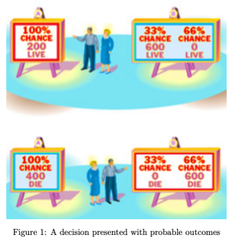

Resource Allocation¶
The prime focus (of this class) is water resources management, although I suspect the principles extend beyond that realm. Water resources management is the activity of planning, developing, distributing and managing the optimum use of water resources. Water resource management planning considers the competing demands for/on water (quantity, quality, location, and timing), and seeks to allocate a scarce resource (water) on an equitable basis to satisfy all uses and demands
Consider the meanings of allocate
to apportion for a specific purpose or to particular persons or things : for example to allocate (distribute) tasks among human and automated components
to set apart or earmark : for example to allocate (designate) a section of the building for special research purposes
Consider the meanings of equity
having or exhibiting equity : dealing fairly and equally with all concerned; an equitable settlement of the dispute
existing or valid in equity as distinguished from law; an equitable defense
Because the resource is scarce; allocation will necessarily deny the resource to some, and supply it to others. Equity implies some kind of “fairness” in that allocation. Allocation requires decisions be made and that is done by either an individual decision maker (like the president) or collective decision maker(s) (like a board of directors
Decision Making Concepts¶
How do individuals and groups make decisions?
Some people may seem indecisive or inconsistent. They may avoid making decisions as long as possible. The same reluctance to make decisions also happens in organizations or institutions.
On the other hand, some people and groups may be accused of ”leaping to conclusions” or making a decision ”without considering all the facts.”
The dicotomy implies that decisions should be made by collecting and weighing various elements in a rational way. Alternatives must exist, or there is no decision required.
There are substantial psychological aspects in decision making, peoples choices are influenced by how the alternatives are presented.
Consider Figure 1 below. The decision is select A or B, and the outcomes are shown. The upper panel presents the alternative in a survival context, whereas the lower panel presents the alternatives in a mortality context. Which is the best decision?

What we have so far are scarce resources, and a desire to alloctate fairly. To allocate we need to make decisions; and decisions (by people) are emotional at the moment of the decision. Hence any tool to help make the decision (think spread the blame) is useful.
The challenge of resources management is to define “what is fair” for a situation; define alternatives (present a decision point); define and implement tools to support the decision.
Tools to Support and Implement Decisions¶
Tools to support the decision will need to address
Value of alternatives – how to measure “fairness”
Policy to rank the value(s)
Policy to guide the decision
It may be possible in a well defined situation to hand off the decision to an algorithm (narrow domain AI). An aircraft autopilot is an example of such a situation – but even that has risks; just ask Boeing!
Tools to implement the decision will need to address
Do we control the system?
SCADA Algorithm operating a water distribution network — can probably be fully au- tonomous with little human intervention
Do we just influence the system
Voluntary compliance versus risk of apprehension for water quality management
References¶
Faulconbridge, Ian. Introduction to Systems Engineering (Kindle Location 181). Argos Press Pty Ltd. Kindle Edition.
Frank, M. (2002), “What is “engineering systems thinking”?”, Kybernetes, Vol. 31 No. 9/10, pp. 1350-1360. https://doi.org/10.1108/03684920210443554
Cleveland, T. G. (2017) RESOURCE ALLOCATION Notes to Accompany CE 5366 at TTU